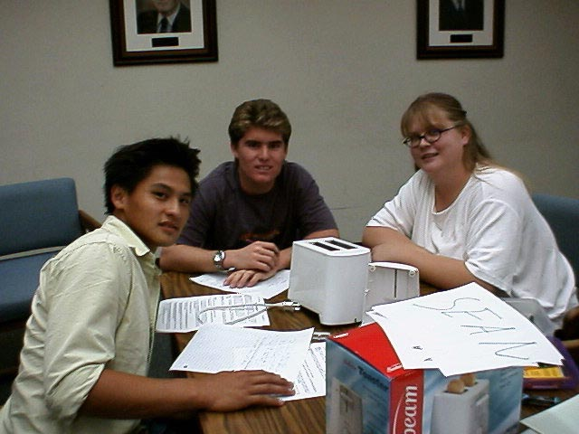

|
Communication |

Through the course of Engineering 5 I feel I have vastly improved my personal communication skills and ability to effectively participate in a group. During the course of these projects, it was essential that I impart exactly what I meant regarding the mechanical structures we needed to design or the important details of my contributions to avoid misunderstandings that could prove disastrous to the assembly of the creation being produced for the project. Because of this pressure, I had to hone my interpersonal communication skills, both verbal and written, to a much higher level than had ever been previously required of me.
My interpersonal communication skills were not all that was improved; the course’s overly retentive graders demanded the most from my reports and presentations, improving my written communication in reports and verbal skills in presentations. Again requiring me to raise my communication skills to a higher level.
I feel I am a very strong communicator and effective group member however I find that the weaknesses in my communication skills lay mainly in my ambiguity in details. In both verbal and written communication I often skip over details and omit examples, forgetting that my audience wishes to hear specifics. For example in the recent power point presentation of team Bombs Away’s PFAPDS I skimmed over the results of the competition stating that the PFAPDS received a poor FOM and did “relatively well” in the third round of the competition where I should have stated the FOM and the results of the third round. To correct this weakness simply I plan to keep it in mind and insure that I provide details and examples in all my communication both written and verbal.